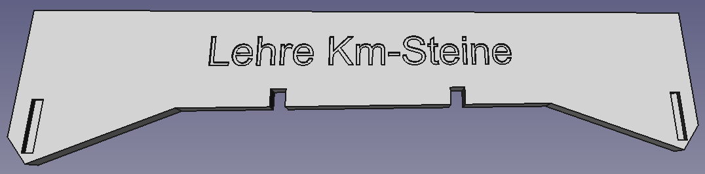

Krümelbahn
KrümelbahnHektometertafeln
Manchmal auch als Kilometertafel, Kilometerstein oder einfach nur als Streckenzeichen benannt, dienen sie der Orientierung an der Strecke und geben an, in welcher Streckenentfernung man sich zum Ausgangspunkt, meist einem größeren Bahnhof, befindet.
Auf dieses nette kleine Detail bin ich durch einen Artikel in der Fremo-Zeitschrift Hp1 (Heft 1-2003) gestossen.
Kleinigkeiten, insbesondere optischer Art, beleben ein Anlagenbild maßgeblich und so kommen Hektometertafeln nun auch auf meinen Modulen zum Einsatz.
Zwei Fragen sind zu klären:
- in welchen Entfernungen stehen diese Tafeln auf dem Modul, links oder rechts der Strecke?
- und wie kann ein Einsatz auf Modulen flexibel gestaltet werden?
- eine Hektometertafel wird auf jedem Modul in der Mitte (also auf halber Strecke des Kastens) platziert
- und für den Moduleinsatz wird die Hektometertafel steckbar ausgeführt.
- in die Unterseite der Hektometertafel wird eine Bohrung Ø 1mm angebracht
- in dieses Loch wird ein Stück Messingdraht Ø 1mm, Länge ca. 10mm geklebt.
Dies sollte zuvor brüniert werden, z.B. mit Messingbraun Fohrmann 90909 - auf das Modul selbst kommt links und rechts des Streckengleises ein Messingröhrchen Ø 1,5mm (Ø innen 1mm), Länge ca. 10mm (ebenfalls brünieren, s.o.)
- der Abstand der Messingröhrchen zur Gleismitte beträgt jeweils 32mm.
Hier habe ich mir eine kleine Montagelehre aus einem Kunststoffstreifen erstellt, die einfach auf das Gleis gesteckt werden kann.
Zudem erlaubt die Steckmöglichkeit auch die problemlose Weiterführung auf den Nachbarmodulen.
Zum Einsatz kommen bei mir Hektometersteine von Noch 14300 mit dem Kilometerbereich von km 13,0 bis km 14,9.
Hier wird der untere dreieckige Ansatz entfernt und entsprechend der obigen Beschreibung bearbeitet.

Von links nach rechts: Messingdraht und darunter die Hülse, Hektometertafel, Montagelehre

Weitere Anbieter sind z.B.:
| Hersteller | Best.Nr. |
|---|---|
| Brawa | 2652 |
| Busch | 1491 |
| MBZ | 80150 |
| RST-Modellbau |

Diese und weitere Anlagenausgestaltungen habe ich in
beschrieben.